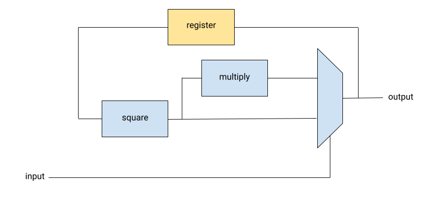

This set of examples goes a bit further than Cava's tutorial and showcases some advanced features. For a more gentle introduction or setup instructions, the tutorial is the best place to start.
Here's the high-level overview of what we'll cover:
- We'll write one circuit template to capture the logical structure of an algorithm, and then show how to instantiate it with different subcircuits in order to perform different computations.
- We'll construct a circuit that efficiently multiplies by any fixed "compile time" constant by constructing the circuit dynamically according to the constant.
- We'll prove everything correct in full generality, meaning the proofs apply to any choice of subcircuits/constants/other parameters!
Some pieces of boilerplate code have been omitted for readability of this page. You can view the source on our GitHub repo to see it, or to step through the code locally.
In this demo, we'll define a circuit that executes a classic arithmetic algorithm, exponentiation by squaring (wikipedia). The pseudocode looks like:
exp(x,e):
if e = 0:
return 1
r = exp (x, e // 2)
if e is even:
return r^2
else:
return r^2 * x
Essentially, you can compute x^e quickly by looking at the bitwise representation of e and either multiplying by x or squaring. This saves operations in comparison to the naive approach, especially for large numbers. To compute x^19, for instance, you would need only 8 multiplications instead of the 18 you would need with a naive approach:
exp(x,19) = exp(x,9) ^ 2 * x exp(x,9) = exp(x,4) ^ 2 * x exp(x,4) = exp(x,2) ^ 2 exp(x,2) = exp(x,1) ^ 2 exp(x,1) = exp(x,0) ^ 2 * x exp(x,0) = 1
If you substitute addition and doubling for multiplication and squaring in this algorithm, and return 0 instead of 1 in the base case, it will compute multiplication instead of exponentiation ("multiplication by doubling"). In this case, you would compute x*19 as:
exp(x,19) = exp(x,9) * 2 + x exp(x,9) = exp(x,4) * 2 + x exp(x,4) = exp(x,2) * 2 exp(x,2) = exp(x,1) * 2 exp(x,1) = exp(x,0) * 2 + x exp(x,0) = 1
For our hardware implementation, we'll assume that x is a fixed constant known before we build the circuit, and that we get the exponent as a stream of bits (most significant bit first). As a circuit diagram, it looks like:
In Cava, this circuit would be defined as follows:
Definition exp_by_squaring {A} (identity : combType A) (square : Circuit (signal A) (signal A)) (multiply : Circuit (signal A) (signal A)) : Circuit (signal Bit) (signal A) := LoopInit identity ((* start: exp[i], r *) Second (square >==> (* r^2 *) Comb fork2 >==> (* r^2, r^2 *) Second multiply (* r^2, r^2*x *)) >==> (* exp[i], (r^2, r^2*x) *) Comb (uncurry mux2 >=> fork2) (* r', r' *)).
In order to support both multiplication and exponentiation with the same definition, we haven't specified yet what exactly our "square" and "multiply" procedures are. In Cava, you can take subcircuits as arguments to your circuit definition, much like in some programming languages you can pass functions as arguments to other functions. In pseudocode, this template would be analogous to:
exp(identity, square, multiply, e):
if e = 0:
return identity
r = exp(identity, square, multiply, e // 2)
r2 = square(r)
if e is even:
return r2
else:
return multiply(r2)
Note that multiply has only one operand here; since we assume x is a fixed constant, the multiply is already specialized to multiply the input by x.
This circuit is so general that it can actually be adapted for even more purposes than exponentiation and multiplication. By plugging in a no-op for square and an incrementer for multiply, we can simply count the high bits of the input stream:
(* count the number of high bits in the input stream *) Definition count_ones {n} : Circuit (signal Bit) (signal (Vec Bit n)) := exp_by_squaring (Vec.of_N 0) (Comb ret) (Comb incrN).
We can simulate the circuit to check that it has the desired behavior:
The incrN subcircuit adds 1 to the input bitvector without growing the size of the vector. This component is part of Cava's core library; check out the reference to browse the various verified circuit components that are included. Vec.of_N is also part of this library; it converts a number of Coq's N (binary natural numbers) type into a constant Cava bit-vector.
Next, let's try to define multiplication-by-doubling. We'll need to have subcircuits for addition of a constant and for doubling. For addition, we can use the addN circuit that's included in Cava's standard library. Doubling, however, can be treated as a bitwise operation; we can shift left by one. So let's define a specific double circuit separately:
(* double a bitvector by adding 0 and truncating *) Definition double {n} : Circuit (signal (Vec Bit n)) (signal (Vec Bit n)) := Comb (Vec.cons zero >=> Vec.shiftout).
Now, we can write a circuit that, given a constant x, computes x times the input stream:
(* multiply x by the input stream *) Definition stream_multiply {n} (x : N) : Circuit (signal Bit) (signal (Vec Bit n)) := (* Circuit that adds x to the input bitvector *) let addx := Comb (fun i => addN (i, Vec.of_N x)) in exp_by_squaring (Vec.of_N 0) double addx.
Let's simulate it to see if it works. [true;false;false;true] is an input stream that represents the number 9, so this simulation computes 3*9.
(* 3 * 9 = 27 *)
The test becomes more readable if we write a quick helper function to convert numbers into streams:
(* Helper for simulation: convert a number into a list of bits with the most signficant bit first *) Definition to_stream (x : N) : list bool := (* reverse because N2Bv puts the least significant bit first *) rev (Vector.to_list (N2Bv x)). (* 3 * 9 = 27 *)(* 5 * 6 = 30 *)(* 5 * 60 = 300 (bit vector size increased to 16) *)
So far, so good. But how about exponentiation by squaring? Now, we need one subcircuit to multiply by a constant and one subcircuit to square the input. Cava's core library already includes squareN, which squares an input bit-vector and truncates to the input size, so squaring is taken care of.
However, for multiplication, since one of the operands is a constant, it might be efficient to construct our circuit in a way that takes advantage of that fact. In Cava, we can actually write circuits that change structure based on constant arguments. This circuit multiplies its input by the number x, which is expressed as Coq's strictly-positive bitvector type, positive.
(* construct a circuit to multiply the input by a compile-time constant (expressed as a strictly positive Coq bitvector) *) Fixpoint mul_const_pos {n} (x : positive) : Circuit (signal (Vec Bit n)) (signal (Vec Bit n)) := (match x with | 1 => Comb ret | y~0 => (* x * i = 2 * y * i *) (mul_const_pos y) >==> double | y~1 => (* x * i = (2 * y + 1) * i = 2 * y * i + i *) Comb fork2 >==> (* i, i *) First (mul_const_pos y >==> double) >==> (* 2*y*i, i *) Comb addN (* 2*y*i + i *) end)%positive.
In case the syntax here is unfamiliar: the match here separates three cases, which correspond to the three constructors of positive. In the first case, x = 1, in which case multiplying by x is just the identity (Comb ret can be read as "a wire"). In the second case, x is constructed from another positive y with a 0 appended to the end, so x = 2*y). In the third case, x is constructed from another positive y, but this time with a 1 appended to the end, so x = 2*y + 1.
We want to handle the case where x = 0 too, so we can define another wrapper function on top where x has the type of Coq's nonnegative bit-vectors, N. N has two constructors; either x is a zero, or x is a positive. So to define our circuit in terms of N, we just produce a circuit that always returns 0 if x is zero and call mul_const_pos to construct the positive case.
(* construct a circuit to multiply the input by a compile-time constant (expressed as a nonnegative Coq bitvector) *) Definition mul_constN {n} (x : N) : Circuit (signal (Vec Bit n)) (signal (Vec Bit n)) := match x with | 0%N => Comb (fun _ => ret (Vec.of_N 0)) | Npos p => mul_const_pos p end.
We can try out constructing this circuit for different values of x to see how it behaves.
Here are the circuit diagrams for some of the smaller ones:
Above: circuit diagram for mul_constN 1.
Above: circuit diagram for mul_constN 4.
Above: circuit diagram for mul_constN 5.
Above: circuit diagram for mul_constN 20. Note that this is the same as composing mul_constN 5 and mul_constN 4.
Now that we can multiply by constants efficiently, we can build a circuit that implements exponentiation by squaring:
(* raise x to the power of the input stream *) Definition stream_exponentiate {n} (x : N) : Circuit (signal Bit) (signal (Vec Bit n)) := exp_by_squaring (Vec.of_N 1) (Comb squareN) (mul_constN x).
It works!
(* Compute 3 ^ 5 = 243 *)(* Compute 5 ^ 6 = 15625 *)(* Compute 3 ^ 123 = 48519278097689642681155855396759336072749841943521979872827 *)
Now that we've defined all our circuits and tested them a little bit to make sure they work for some inputs, it's time to prove them correct more rigorously. The really cool thing about defining these circuits in Coq is that now we can prove that they behave as expected for all possible inputs. We can even prove that they work for all constant parameters, such as the bit-vector size n for stream_exponentiate and the constant x for mul_constN. In a sense, we're not just proving that our one single circuit is correct; we're proving that the strategy we use to construct it is always correct. This kind of reasoning is an extremely powerful tool.
First, we'll want to prove that exp_by_squaring is correct. We'll define a specification for it in Coq's specification language that captures the crux of the algorithm.
Definition exp_by_squaring_spec
{A} (mulx square : A -> A)
(id : A) (exponent : list bool) : A :=
fold_left
(fun r (bit : bool) => if bit then mulx (square r) else square r)
exponent id.This specification takes a stream of input and produces the output value we expect from the circuit after that stream of input has been processed. But this doesn't quite match our circuit's behavior; we'll get intermediate values as well. We can define a helper function to apply our specification to each prefix of the input:
Definition map_stream {A B} (f : list A -> B) (input : list A) : list B
:= map (fun n => f (firstn (S n) input)) (seq 0 (length input)).And now, the proof! It more or less comes down to applying a loop-invariant lemma, using the preconditions about square and multiply to rewrite those expressions, and doing some list manipulations. Just like in the tutorial, it's our suggestion to focus more on the proof statements (the part between Lemma and Proof) than the proof bodies (the part between Proof and Qed). The former is intended for humans to read and reason about; the latter is an argument to Coq that the statement is true, and if the Coq typechecker accepts it then the argument must be valid (unless there's a bug in Coq itself).
A:SignalTypemul_spec, square_spec:combType A -> combType Aidentity:combType Asquare, multiply:Circuit (combType A) (combType A)square_correct:forall (st : circuit_state square) (i : combType A), step square st i = (square_spec i, st)multiply_correct:forall (st : circuit_state multiply) (i : combType A), step multiply st i = (mul_spec i, st)input:list boolsimulate (exp_by_squaring identity square multiply) input = map_stream (exp_by_squaring_spec mul_spec square_spec identity) inputA:SignalTypemul_spec, square_spec:combType A -> combType Aidentity:combType Asquare, multiply:Circuit (combType A) (combType A)square_correct:forall (st : circuit_state square) (i : combType A), step square st i = (square_spec i, st)multiply_correct:forall (st : circuit_state multiply) (i : combType A), step multiply st i = (mul_spec i, st)input:list boolsimulate (exp_by_squaring identity square multiply) input = map_stream (exp_by_squaring_spec mul_spec square_spec identity) inputA:SignalTypemul_spec, square_spec:combType A -> combType Aidentity:combType Asquare, multiply:Circuit (combType A) (combType A)square_correct:forall (st : circuit_state square) (i : combType A), step square st i = (square_spec i, st)multiply_correct:forall (st : circuit_state multiply) (i : combType A), step multiply st i = (mul_spec i, st)input:list boolsimulate (LoopInit identity (Second (square >==> Comb fork2 >==> Second multiply) >==> Comb (uncurry mux2 >=> fork2))) input = map (fun n : nat => exp_by_squaring_spec mul_spec square_spec identity (firstn (S n) input)) (seq 0 (Datatypes.length input))A:SignalTypemul_spec, square_spec:combType A -> combType Aidentity:combType Asquare, multiply:Circuit (combType A) (combType A)square_correct:forall (st : circuit_state square) (i : combType A), step square st i = (square_spec i, st)multiply_correct:forall (st : circuit_state multiply) (i : combType A), step multiply st i = (mul_spec i, st)input:list bool[] = map (fun n : nat => exp_by_squaring_spec mul_spec square_spec identity (firstn (S n) input)) (seq 0 0) /\ identity = exp_by_squaring_spec mul_spec square_spec identity (firstn 0 input)A:SignalTypemul_spec, square_spec:combType A -> combType Aidentity:combType Asquare, multiply:Circuit (combType A) (combType A)square_correct:forall (st : circuit_state square) (i : combType A), step square st i = (square_spec i, st)multiply_correct:forall (st : circuit_state multiply) (i : combType A), step multiply st i = (mul_spec i, st)input:list boolforall (t : nat) (acc : list (combType A)) (st : combType A) (bodyst : circuit_state (Second (square >==> Comb fork2 >==> Second multiply) >==> Comb (uncurry mux2 >=> fork2))) (d : combType Bit), acc = map (fun n : nat => exp_by_squaring_spec mul_spec square_spec identity (firstn (S n) input)) (seq 0 t) /\ st = exp_by_squaring_spec mul_spec square_spec identity (firstn t input) -> 0 <= t < Datatypes.length input -> let out_st'_bodyst' := step (Second (square >==> Comb fork2 >==> Second multiply) >==> Comb (uncurry mux2 >=> fork2)) bodyst (nth t input d, st) in let out := fst (fst out_st'_bodyst') in let st' := snd (fst out_st'_bodyst') in let bodyst' := snd out_st'_bodyst' in acc ++ [out] = map (fun n : nat => exp_by_squaring_spec mul_spec square_spec identity (firstn (S n) input)) (seq 0 (S t)) /\ st' = exp_by_squaring_spec mul_spec square_spec identity (firstn (S t) input)A:SignalTypemul_spec, square_spec:combType A -> combType Aidentity:combType Asquare, multiply:Circuit (combType A) (combType A)square_correct:forall (st : circuit_state square) (i : combType A), step square st i = (square_spec i, st)multiply_correct:forall (st : circuit_state multiply) (i : combType A), step multiply st i = (mul_spec i, st)input:list boolforall (acc : list (combType A)) (st : combType A), circuit_state (Second (square >==> Comb fork2 >==> Second multiply) >==> Comb (uncurry mux2 >=> fork2)) -> acc = map (fun n : nat => exp_by_squaring_spec mul_spec square_spec identity (firstn (S n) input)) (seq 0 (Datatypes.length input)) /\ st = exp_by_squaring_spec mul_spec square_spec identity (firstn (Datatypes.length input) input) -> acc = map (fun n : nat => exp_by_squaring_spec mul_spec square_spec identity (firstn (S n) input)) (seq 0 (Datatypes.length input))split; reflexivity.A:SignalTypemul_spec, square_spec:combType A -> combType Aidentity:combType Asquare, multiply:Circuit (combType A) (combType A)square_correct:forall (st : circuit_state square) (i : combType A), step square st i = (square_spec i, st)multiply_correct:forall (st : circuit_state multiply) (i : combType A), step multiply st i = (mul_spec i, st)input:list bool[] = map (fun n : nat => exp_by_squaring_spec mul_spec square_spec identity (firstn (S n) input)) (seq 0 0) /\ identity = exp_by_squaring_spec mul_spec square_spec identity (firstn 0 input)A:SignalTypemul_spec, square_spec:combType A -> combType Aidentity:combType Asquare, multiply:Circuit (combType A) (combType A)square_correct:forall (st : circuit_state square) (i : combType A), step square st i = (square_spec i, st)multiply_correct:forall (st : circuit_state multiply) (i : combType A), step multiply st i = (mul_spec i, st)input:list boolforall (t : nat) (acc : list (combType A)) (st : combType A) (bodyst : circuit_state (Second (square >==> Comb fork2 >==> Second multiply) >==> Comb (uncurry mux2 >=> fork2))) (d : combType Bit), acc = map (fun n : nat => exp_by_squaring_spec mul_spec square_spec identity (firstn (S n) input)) (seq 0 t) /\ st = exp_by_squaring_spec mul_spec square_spec identity (firstn t input) -> 0 <= t < Datatypes.length input -> let out_st'_bodyst' := step (Second (square >==> Comb fork2 >==> Second multiply) >==> Comb (uncurry mux2 >=> fork2)) bodyst (nth t input d, st) in let out := fst (fst out_st'_bodyst') in let st' := snd (fst out_st'_bodyst') in let bodyst' := snd out_st'_bodyst' in acc ++ [out] = map (fun n : nat => exp_by_squaring_spec mul_spec square_spec identity (firstn (S n) input)) (seq 0 (S t)) /\ st' = exp_by_squaring_spec mul_spec square_spec identity (firstn (S t) input)A:SignalTypemul_spec, square_spec:combType A -> combType Aidentity:combType Asquare, multiply:Circuit (combType A) (combType A)square_correct:forall (st : circuit_state square) (i : combType A), step square st i = (square_spec i, st)multiply_correct:forall (st : circuit_state multiply) (i : combType A), step multiply st i = (mul_spec i, st)input:list boolforall (acc : list (combType A)) (st : combType A), circuit_state (Second (square >==> Comb fork2 >==> Second multiply) >==> Comb (uncurry mux2 >=> fork2)) -> acc = map (fun n : nat => exp_by_squaring_spec mul_spec square_spec identity (firstn (S n) input)) (seq 0 (Datatypes.length input)) /\ st = exp_by_squaring_spec mul_spec square_spec identity (firstn (Datatypes.length input) input) -> acc = map (fun n : nat => exp_by_squaring_spec mul_spec square_spec identity (firstn (S n) input)) (seq 0 (Datatypes.length input))A:SignalTypemul_spec, square_spec:combType A -> combType Aidentity:combType Asquare, multiply:Circuit (combType A) (combType A)square_correct:forall (st : circuit_state square) (i : combType A), step square st i = (square_spec i, st)multiply_correct:forall (st : circuit_state multiply) (i : combType A), step multiply st i = (mul_spec i, st)input:list boolforall (t : nat) (acc : list (combType A)) (st : combType A) (bodyst : circuit_state (Second (square >==> Comb fork2 >==> Second multiply) >==> Comb (uncurry mux2 >=> fork2))) (d : combType Bit), acc = map (fun n : nat => exp_by_squaring_spec mul_spec square_spec identity (firstn (S n) input)) (seq 0 t) /\ st = exp_by_squaring_spec mul_spec square_spec identity (firstn t input) -> 0 <= t < Datatypes.length input -> let out_st'_bodyst' := step (Second (square >==> Comb fork2 >==> Second multiply) >==> Comb (uncurry mux2 >=> fork2)) bodyst (nth t input d, st) in let out := fst (fst out_st'_bodyst') in let st' := snd (fst out_st'_bodyst') in let bodyst' := snd out_st'_bodyst' in acc ++ [out] = map (fun n : nat => exp_by_squaring_spec mul_spec square_spec identity (firstn (S n) input)) (seq 0 (S t)) /\ st' = exp_by_squaring_spec mul_spec square_spec identity (firstn (S t) input)A:SignalTypemul_spec, square_spec:combType A -> combType Aidentity:combType Asquare, multiply:Circuit (combType A) (combType A)square_correct:forall (st : circuit_state square) (i : combType A), step square st i = (square_spec i, st)multiply_correct:forall (st : circuit_state multiply) (i : combType A), step multiply st i = (mul_spec i, st)input:list boolt:natacc:list (combType A)st:combType Abodyst:circuit_state (Second (square >==> Comb fork2 >==> Second multiply) >==> Comb (uncurry mux2 >=> fork2))d:combType BitH:acc = map (fun n : nat => exp_by_squaring_spec mul_spec square_spec identity (firstn (S n) input)) (seq 0 t) /\ st = exp_by_squaring_spec mul_spec square_spec identity (firstn t input)H0:0 <= t < Datatypes.length inputacc ++ [fst (fst (step (Second (square >==> Comb fork2 >==> Second multiply) >==> Comb (uncurry mux2 >=> fork2)) bodyst (nth t input d, st)))] = map (fun n : nat => exp_by_squaring_spec mul_spec square_spec identity (firstn (S n) input)) (seq 0 (S t)) /\ snd (fst (step (Second (square >==> Comb fork2 >==> Second multiply) >==> Comb (uncurry mux2 >=> fork2)) bodyst (nth t input d, st))) = exp_by_squaring_spec mul_spec square_spec identity (firstn (S t) input)A:SignalTypemul_spec, square_spec:combType A -> combType Aidentity:combType Asquare, multiply:Circuit (combType A) (combType A)square_correct:forall (st : circuit_state square) (i : combType A), step square st i = (square_spec i, st)multiply_correct:forall (st : circuit_state multiply) (i : combType A), step multiply st i = (mul_spec i, st)input:list boolt:natbodyst:circuit_state (Second (square >==> Comb fork2 >==> Second multiply) >==> Comb (uncurry mux2 >=> fork2))d:combType BitH0:0 <= tH1:t < Datatypes.length inputmap (fun n : nat => exp_by_squaring_spec mul_spec square_spec identity (firstn (S n) input)) (seq 0 t) ++ [fst (fst (step (Second (square >==> Comb fork2 >==> Second multiply) >==> Comb (uncurry mux2 >=> fork2)) bodyst (nth t input d, exp_by_squaring_spec mul_spec square_spec identity (firstn t input))))] = map (fun n : nat => exp_by_squaring_spec mul_spec square_spec identity (firstn (S n) input)) (seq 0 (S t)) /\ snd (fst (step (Second (square >==> Comb fork2 >==> Second multiply) >==> Comb (uncurry mux2 >=> fork2)) bodyst (nth t input d, exp_by_squaring_spec mul_spec square_spec identity (firstn t input)))) = exp_by_squaring_spec mul_spec square_spec identity (firstn (S t) input)A:SignalTypemul_spec, square_spec:combType A -> combType Aidentity:combType Asquare, multiply:Circuit (combType A) (combType A)square_correct:forall (st : circuit_state square) (i : combType A), step square st i = (square_spec i, st)multiply_correct:forall (st : circuit_state multiply) (i : combType A), step multiply st i = (mul_spec i, st)input:list boolt:natbodyst:circuit_state (Second (square >==> Comb fork2 >==> Second multiply) >==> Comb (uncurry mux2 >=> fork2))d:combType BitH0:0 <= tH1:t < Datatypes.length inputmap (fun n : nat => exp_by_squaring_spec mul_spec square_spec identity (firstn (S n) input)) (seq 0 t) ++ [fst (fst (step (Second (square >==> Comb fork2 >==> Second multiply) >==> Comb (fun x : combType Bit * (combType A * combType A) => x <- (let (x0, y) := x in mux2 x0 y);; fork2 x)) bodyst (nth t input d, exp_by_squaring_spec mul_spec square_spec identity (firstn t input))))] = map (fun n : nat => exp_by_squaring_spec mul_spec square_spec identity (firstn (S n) input)) (seq 0 (S t)) /\ snd (fst (step (Second (square >==> Comb fork2 >==> Second multiply) >==> Comb (fun x : combType Bit * (combType A * combType A) => x <- (let (x0, y) := x in mux2 x0 y);; fork2 x)) bodyst (nth t input d, exp_by_squaring_spec mul_spec square_spec identity (firstn t input)))) = exp_by_squaring_spec mul_spec square_spec identity (firstn (S t) input)(* simplify step, rewrite with square/multiply correctness lemmas *)A:SignalTypemul_spec, square_spec:combType A -> combType Aidentity:combType Asquare, multiply:Circuit (combType A) (combType A)square_correct:forall (st : circuit_state square) (i : combType A), step square st i = (square_spec i, st)multiply_correct:forall (st : circuit_state multiply) (i : combType A), step multiply st i = (mul_spec i, st)input:list boolt:natbodyst:circuit_state (Second (square >==> Comb fork2 >==> Second multiply) >==> Comb (uncurry mux2 >=> fork2))d:combType BitH0:0 <= tH1:t < Datatypes.length inputmap (fun n : nat => exp_by_squaring_spec mul_spec square_spec identity (firstn (S n) input)) (seq 0 t) ++ [fst (fst (step (Second (square >==> Comb fork2 >==> Second multiply) >==> Comb (fun x : combType Bit * (combType A * combType A) => fork2 (let (x0, y) := x in mux2 x0 y))) bodyst (nth t input d, exp_by_squaring_spec mul_spec square_spec identity (firstn t input))))] = map (fun n : nat => exp_by_squaring_spec mul_spec square_spec identity (firstn (S n) input)) (seq 0 (S t)) /\ snd (fst (step (Second (square >==> Comb fork2 >==> Second multiply) >==> Comb (fun x : combType Bit * (combType A * combType A) => fork2 (let (x0, y) := x in mux2 x0 y))) bodyst (nth t input d, exp_by_squaring_spec mul_spec square_spec identity (firstn t input)))) = exp_by_squaring_spec mul_spec square_spec identity (firstn (S t) input)(* separate the most recent step from previous steps *)A:SignalTypemul_spec, square_spec:combType A -> combType Aidentity:combType Asquare, multiply:Circuit (combType A) (combType A)square_correct:forall (st : circuit_state square) (i : combType A), step square st i = (square_spec i, st)multiply_correct:forall (st : circuit_state multiply) (i : combType A), step multiply st i = (mul_spec i, st)input:list boolt:natbodyst:circuit_state (Second (square >==> Comb fork2 >==> Second multiply) >==> Comb (uncurry mux2 >=> fork2))d:combType BitH0:0 <= tH1:t < Datatypes.length inputmap (fun n : nat => exp_by_squaring_spec mul_spec square_spec identity (firstn (S n) input)) (seq 0 t) ++ [if nth t input d then mul_spec (square_spec (exp_by_squaring_spec mul_spec square_spec identity (firstn t input))) else square_spec (exp_by_squaring_spec mul_spec square_spec identity (firstn t input))] = map (fun n : nat => exp_by_squaring_spec mul_spec square_spec identity (firstn (S n) input)) (seq 0 (S t)) /\ (if nth t input d then mul_spec (square_spec (exp_by_squaring_spec mul_spec square_spec identity (firstn t input))) else square_spec (exp_by_squaring_spec mul_spec square_spec identity (firstn t input))) = exp_by_squaring_spec mul_spec square_spec identity (firstn (S t) input)A:SignalTypemul_spec, square_spec:combType A -> combType Aidentity:combType Asquare, multiply:Circuit (combType A) (combType A)square_correct:forall (st : circuit_state square) (i : combType A), step square st i = (square_spec i, st)multiply_correct:forall (st : circuit_state multiply) (i : combType A), step multiply st i = (mul_spec i, st)input:list boolt:natbodyst:circuit_state (Second (square >==> Comb fork2 >==> Second multiply) >==> Comb (uncurry mux2 >=> fork2))d:combType BitH0:0 <= tH1:t < Datatypes.length inputmap (fun n : nat => exp_by_squaring_spec mul_spec square_spec identity (firstn (S n) input)) (seq 0 t) ++ [if nth t input d then mul_spec (square_spec (exp_by_squaring_spec mul_spec square_spec identity (firstn t input))) else square_spec (exp_by_squaring_spec mul_spec square_spec identity (firstn t input))] = map (fun n : nat => exp_by_squaring_spec mul_spec square_spec identity (firstn (S n) input)) (seq 0 t) ++ [exp_by_squaring_spec mul_spec square_spec identity (firstn (S t) input)] /\ (if nth t input d then mul_spec (square_spec (exp_by_squaring_spec mul_spec square_spec identity (firstn t input))) else square_spec (exp_by_squaring_spec mul_spec square_spec identity (firstn t input))) = exp_by_squaring_spec mul_spec square_spec identity (firstn (S t) input)A:SignalTypemul_spec, square_spec:combType A -> combType Aidentity:combType Asquare, multiply:Circuit (combType A) (combType A)square_correct:forall (st : circuit_state square) (i : combType A), step square st i = (square_spec i, st)multiply_correct:forall (st : circuit_state multiply) (i : combType A), step multiply st i = (mul_spec i, st)input:list boolt:natbodyst:circuit_state (Second (square >==> Comb fork2 >==> Second multiply) >==> Comb (uncurry mux2 >=> fork2))d:combType BitH0:0 <= tH1:t < Datatypes.length inputmap (fun n : nat => exp_by_squaring_spec mul_spec square_spec identity (firstn (S n) input)) (seq 0 t) ++ [if nth t input d then mul_spec (square_spec (exp_by_squaring_spec mul_spec square_spec identity (firstn t input))) else square_spec (exp_by_squaring_spec mul_spec square_spec identity (firstn t input))] = map (fun n : nat => exp_by_squaring_spec mul_spec square_spec identity (firstn (S n) input)) (seq 0 t) ++ [exp_by_squaring_spec mul_spec square_spec identity (firstn t input ++ [nth t input d])] /\ (if nth t input d then mul_spec (square_spec (exp_by_squaring_spec mul_spec square_spec identity (firstn t input))) else square_spec (exp_by_squaring_spec mul_spec square_spec identity (firstn t input))) = exp_by_squaring_spec mul_spec square_spec identity (firstn t input ++ [nth t input d])A:SignalTypemul_spec, square_spec:combType A -> combType Aidentity:combType Asquare, multiply:Circuit (combType A) (combType A)square_correct:forall (st : circuit_state square) (i : combType A), step square st i = (square_spec i, st)multiply_correct:forall (st : circuit_state multiply) (i : combType A), step multiply st i = (mul_spec i, st)input:list boolt:natbodyst:circuit_state (Second (square >==> Comb fork2 >==> Second multiply) >==> Comb (uncurry mux2 >=> fork2))d:combType BitH0:0 <= tH1:t < Datatypes.length inputmap (fun n : nat => fold_left (fun (r : combType A) (bit : bool) => if bit then mul_spec (square_spec r) else square_spec r) (firstn (S n) input) identity) (seq 0 t) ++ [if nth t input d then mul_spec (square_spec (fold_left (fun (r : combType A) (bit : bool) => if bit then mul_spec (square_spec r) else square_spec r) (firstn t input) identity)) else square_spec (fold_left (fun (r : combType A) (bit : bool) => if bit then mul_spec (square_spec r) else square_spec r) (firstn t input) identity)] = map (fun n : nat => fold_left (fun (r : combType A) (bit : bool) => if bit then mul_spec (square_spec r) else square_spec r) (firstn (S n) input) identity) (seq 0 t) ++ [fold_left (fun (r : combType A) (bit : bool) => if bit then mul_spec (square_spec r) else square_spec r) (firstn t input ++ [nth t input d]) identity] /\ (if nth t input d then mul_spec (square_spec (fold_left (fun (r : combType A) (bit : bool) => if bit then mul_spec (square_spec r) else square_spec r) (firstn t input) identity)) else square_spec (fold_left (fun (r : combType A) (bit : bool) => if bit then mul_spec (square_spec r) else square_spec r) (firstn t input) identity)) = fold_left (fun (r : combType A) (bit : bool) => if bit then mul_spec (square_spec r) else square_spec r) (firstn t input ++ [nth t input d]) identitysplit; reflexivity.A:SignalTypemul_spec, square_spec:combType A -> combType Aidentity:combType Asquare, multiply:Circuit (combType A) (combType A)square_correct:forall (st : circuit_state square) (i : combType A), step square st i = (square_spec i, st)multiply_correct:forall (st : circuit_state multiply) (i : combType A), step multiply st i = (mul_spec i, st)input:list boolt:natbodyst:circuit_state (Second (square >==> Comb fork2 >==> Second multiply) >==> Comb (uncurry mux2 >=> fork2))d:combType BitH0:0 <= tH1:t < Datatypes.length inputmap (fun n : nat => fold_left (fun (r : combType A) (bit : bool) => if bit then mul_spec (square_spec r) else square_spec r) (firstn (S n) input) identity) (seq 0 t) ++ [if nth t input d then mul_spec (square_spec (fold_left (fun (r : combType A) (bit : bool) => if bit then mul_spec (square_spec r) else square_spec r) (firstn t input) identity)) else square_spec (fold_left (fun (r : combType A) (bit : bool) => if bit then mul_spec (square_spec r) else square_spec r) (firstn t input) identity)] = map (fun n : nat => fold_left (fun (r : combType A) (bit : bool) => if bit then mul_spec (square_spec r) else square_spec r) (firstn (S n) input) identity) (seq 0 t) ++ [if nth t input d then mul_spec (square_spec (fold_left (fun (r : combType A) (bit : bool) => if bit then mul_spec (square_spec r) else square_spec r) (firstn t input) identity)) else square_spec (fold_left (fun (r : combType A) (bit : bool) => if bit then mul_spec (square_spec r) else square_spec r) (firstn t input) identity)] /\ (if nth t input d then mul_spec (square_spec (fold_left (fun (r : combType A) (bit : bool) => if bit then mul_spec (square_spec r) else square_spec r) (firstn t input) identity)) else square_spec (fold_left (fun (r : combType A) (bit : bool) => if bit then mul_spec (square_spec r) else square_spec r) (firstn t input) identity)) = (if nth t input d then mul_spec (square_spec (fold_left (fun (r : combType A) (bit : bool) => if bit then mul_spec (square_spec r) else square_spec r) (firstn t input) identity)) else square_spec (fold_left (fun (r : combType A) (bit : bool) => if bit then mul_spec (square_spec r) else square_spec r) (firstn t input) identity))A:SignalTypemul_spec, square_spec:combType A -> combType Aidentity:combType Asquare, multiply:Circuit (combType A) (combType A)square_correct:forall (st : circuit_state square) (i : combType A), step square st i = (square_spec i, st)multiply_correct:forall (st : circuit_state multiply) (i : combType A), step multiply st i = (mul_spec i, st)input:list boolforall (acc : list (combType A)) (st : combType A), circuit_state (Second (square >==> Comb fork2 >==> Second multiply) >==> Comb (uncurry mux2 >=> fork2)) -> acc = map (fun n : nat => exp_by_squaring_spec mul_spec square_spec identity (firstn (S n) input)) (seq 0 (Datatypes.length input)) /\ st = exp_by_squaring_spec mul_spec square_spec identity (firstn (Datatypes.length input) input) -> acc = map (fun n : nat => exp_by_squaring_spec mul_spec square_spec identity (firstn (S n) input)) (seq 0 (Datatypes.length input))A:SignalTypemul_spec, square_spec:combType A -> combType Aidentity:combType Asquare, multiply:Circuit (combType A) (combType A)square_correct:forall (st : circuit_state square) (i : combType A), step square st i = (square_spec i, st)multiply_correct:forall (st : circuit_state multiply) (i : combType A), step multiply st i = (mul_spec i, st)input:list boolforall (acc : list (combType A)) (st : combType A), circuit_state (Second (square >==> Comb fork2 >==> Second multiply) >==> Comb (uncurry mux2 >=> fork2)) -> acc = map (fun n : nat => exp_by_squaring_spec mul_spec square_spec identity (firstn (S n) input)) (seq 0 (Datatypes.length input)) /\ st = exp_by_squaring_spec mul_spec square_spec identity (firstn (Datatypes.length input) input) -> acc = map (fun n : nat => exp_by_squaring_spec mul_spec square_spec identity (firstn (S n) input)) (seq 0 (Datatypes.length input))reflexivity. } Qed.A:SignalTypemul_spec, square_spec:combType A -> combType Aidentity:combType Asquare, multiply:Circuit (combType A) (combType A)square_correct:forall (st : circuit_state square) (i : combType A), step square st i = (square_spec i, st)multiply_correct:forall (st : circuit_state multiply) (i : combType A), step multiply st i = (mul_spec i, st)input:list boolbodyst:circuit_state (Second (square >==> Comb fork2 >==> Second multiply) >==> Comb (uncurry mux2 >=> fork2))map (fun n : nat => exp_by_squaring_spec mul_spec square_spec identity (firstn (S n) input)) (seq 0 (Datatypes.length input)) = map (fun n : nat => exp_by_squaring_spec mul_spec square_spec identity (firstn (S n) input)) (seq 0 (Datatypes.length input))
From here, we no longer have to reason about the exponentiation-by-squaring circuit; we can use this lemma to prove all our other circuits are correct. Instead, we can reason about exp_by_squaring_spec, with no circuit-related reasoning. For example, to prove the count_ones circuit correct, we first prove that our specification (which is based on the Coq standard library definition count_occ) matches exp_by_squaring_spec.
(* helper lemma proving that count_occ is a specialization of exp_by_squaring_spec *)n:natl:list boolstart:Nexp_by_squaring_spec (fun v : combType (Vec Bit n) => N2Bv_sized n (Bv2N v + 1)) (fun v : combType (Vec Bit n) => v) (N2Bv_sized n start) l = N2Bv_sized n (N.of_nat (count_occ bool_dec l true) + start)n:natl:list boolstart:Nexp_by_squaring_spec (fun v : combType (Vec Bit n) => N2Bv_sized n (Bv2N v + 1)) (fun v : combType (Vec Bit n) => v) (N2Bv_sized n start) l = N2Bv_sized n (N.of_nat (count_occ bool_dec l true) + start)n:natl:list boolstart:Nfold_left (fun (r : combType (Vec Bit n)) (bit : bool) => if bit then N2Bv_sized n (Bv2N r + 1) else r) l (N2Bv_sized n start) = N2Bv_sized n (N.of_nat (count_occ bool_dec l true) + start)n:natl:list boolforall start : N, fold_left (fun (r : combType (Vec Bit n)) (bit : bool) => if bit then N2Bv_sized n (Bv2N r + 1) else r) l (N2Bv_sized n start) = N2Bv_sized n (N.of_nat (count_occ bool_dec l true) + start)n:natbit:booll:list boolIHl:forall start : N, fold_left (fun (r : combType (Vec Bit n)) (bit : bool) => if bit then N2Bv_sized n (Bv2N r + 1) else r) l (N2Bv_sized n start) = N2Bv_sized n (N.of_nat (count_occ bool_dec l true) + start)forall start : N, fold_left (fun (r : combType (Vec Bit n)) (bit : bool) => if bit then N2Bv_sized n (Bv2N r + 1) else r) (bit :: l) (N2Bv_sized n start) = N2Bv_sized n (N.of_nat (count_occ bool_dec (bit :: l) true) + start)n:natbit:booll:list boolIHl:forall start : N, fold_left (fun (r : combType (Vec Bit n)) (bit : bool) => if bit then N2Bv_sized n (Bv2N r + 1) else r) l (N2Bv_sized n start) = N2Bv_sized n (N.of_nat (count_occ bool_dec l true) + start)start:Nfold_left (fun (r : combType (Vec Bit n)) (bit : bool) => if bit then N2Bv_sized n (Bv2N r + 1) else r) l (if bit then N2Bv_sized n (Bv2N (N2Bv_sized n start) + 1) else N2Bv_sized n start) = N2Bv_sized n (N.of_nat (if bool_dec bit true then S (count_occ bool_dec l true) else count_occ bool_dec l true) + start)n:natl:list boolIHl:forall start : N, fold_left (fun (r : combType (Vec Bit n)) (bit : bool) => if bit then N2Bv_sized n (Bv2N r + 1) else r) l (N2Bv_sized n start) = N2Bv_sized n (N.of_nat (count_occ bool_dec l true) + start)start:Ne:true = truefold_left (fun (r : combType (Vec Bit n)) (bit : bool) => if bit then N2Bv_sized n (Bv2N r + 1) else r) l (N2Bv_sized n (Bv2N (N2Bv_sized n start) + 1)) = N2Bv_sized n (N.of_nat (S (count_occ bool_dec l true)) + start)n:natl:list boolIHl:forall start : N, fold_left (fun (r : combType (Vec Bit n)) (bit : bool) => if bit then N2Bv_sized n (Bv2N r + 1) else r) l (N2Bv_sized n start) = N2Bv_sized n (N.of_nat (count_occ bool_dec l true) + start)start:Ne:true = truefold_left (fun (r : combType (Vec Bit n)) (bit : bool) => if bit then N2Bv_sized n (Bv2N r + 1) else r) l (N2Bv_sized n (start + 1)) = N2Bv_sized n (N.of_nat (S (count_occ bool_dec l true)) + start)n:natl:list boolIHl:forall start : N, fold_left (fun (r : combType (Vec Bit n)) (bit : bool) => if bit then N2Bv_sized n (Bv2N r + 1) else r) l (N2Bv_sized n start) = N2Bv_sized n (N.of_nat (count_occ bool_dec l true) + start)start:Ne:true = trueN2Bv_sized n (N.of_nat (count_occ bool_dec l true) + (start + 1)) = N2Bv_sized n (N.of_nat (S (count_occ bool_dec l true)) + start)lia. Qed.n:natl:list boolIHl:forall start : N, fold_left (fun (r : combType (Vec Bit n)) (bit : bool) => if bit then N2Bv_sized n (Bv2N r + 1) else r) l (N2Bv_sized n start) = N2Bv_sized n (N.of_nat (count_occ bool_dec l true) + start)start:Ne:true = true(N.of_nat (count_occ bool_dec l true) + (start + 1))%N = (N.of_nat (S (count_occ bool_dec l true)) + start)%N
We can use this lemma to prove that, no matter how many timesteps we run or how big our bit-vector is, the nth output of count_ones will be the number of true values that appear in the first n bits of input, truncated to fit the bit-vector size. Because we're doing all of this with inductive reasoning, it's not at all computationally intensive to write such a proof.
n:natinput:list boolsimulate count_ones input = map_stream (fun l : list bool => let count := count_occ bool_dec l true in N2Bv_sized n (N.of_nat count)) inputn:natinput:list boolsimulate count_ones input = map_stream (fun l : list bool => let count := count_occ bool_dec l true in N2Bv_sized n (N.of_nat count)) inputn:natinput:list boolsimulate (exp_by_squaring (Vec.of_N 0) (Comb ret) (Comb incrN)) input = map_stream (fun l : list bool => N2Bv_sized n (N.of_nat (count_occ bool_dec l true))) inputn:natinput:list boolmap_stream (exp_by_squaring_spec (fun v : Bvector n => N2Bv_sized n (Bv2N v + 1)) (fun v : combType (Vec Bit n) => v) (Vec.of_N 0)) input = map_stream (fun l : list bool => N2Bv_sized n (N.of_nat (count_occ bool_dec l true))) inputn:natinput:list boola:natexp_by_squaring_spec (fun v : Bvector n => N2Bv_sized n (Bv2N v + 1)) (fun v : combType (Vec Bit n) => v) (Vec.of_N 0) (firstn (S a) input) = N2Bv_sized n (N.of_nat (count_occ bool_dec (firstn (S a) input) true))n:natinput:list boola:natexp_by_squaring_spec (fun v : Bvector n => N2Bv_sized n (Bv2N v + 1)) (fun v : combType (Vec Bit n) => v) (N2Bv_sized n 0) (firstn (S a) input) = N2Bv_sized n (N.of_nat (count_occ bool_dec (firstn (S a) input) true))f_equal; lia. Qed.n:natinput:list boola:natN2Bv_sized n (N.of_nat (count_occ bool_dec (firstn (S a) input) true) + 0) = N2Bv_sized n (N.of_nat (count_occ bool_dec (firstn (S a) input) true))
To prove that stream_multiply is correct, we'll first have to prove the single-step behavior of double (to satisfy the square_correct precondition of exp_by_squaring_correct). That proof is pretty quick:
n:natst:circuit_state doublei:combType (Vec Bit n)step double st i = (N2Bv_sized n (Bv2N i + Bv2N i), st)n:natst:circuit_state doublei:combType (Vec Bit n)step double st i = (N2Bv_sized n (Bv2N i + Bv2N i), st)n:natst:circuit_state doublei:combType (Vec Bit n)(x <- Vec.cons zero i;; Vec.shiftout x, tt) = (N2Bv_sized n (Bv2N i + Bv2N i), st)n:natst:circuit_state doublei:combType (Vec Bit n)(Vector.shiftout (false :: i), tt) = (N2Bv_sized n (Bv2N i + Bv2N i), st)n:natst:circuit_state doublei:combType (Vec Bit n)(N2Bv_sized n (2 * Bv2N i), tt) = (N2Bv_sized n (Bv2N i + Bv2N i), st)n:natst:circuit_state doublei:combType (Vec Bit n)N2Bv_sized n (2 * Bv2N i) = N2Bv_sized n (Bv2N i + Bv2N i)lia. Qed.n:natst:circuit_state doublei:combType (Vec Bit n)(2 * Bv2N i)%N = (Bv2N i + Bv2N i)%N
It's useful to write the inverse operation of to_stream so that we can talk about the numeric value that the input represents:
Definition from_stream (l : list bool) : N := Bv2N (Vector.of_list (rev l)).bit:booll:list boolfrom_stream (bit :: l) = ((if bit then 2 ^ N.of_nat (Datatypes.length l) else 0) + from_stream l)%Nbit:booll:list boolfrom_stream (bit :: l) = ((if bit then 2 ^ N.of_nat (Datatypes.length l) else 0) + from_stream l)%Nbit:booll:list boolBv2N (Vector.of_list (rev (bit :: l))) = ((if bit then 2 ^ N.of_nat (Datatypes.length l) else 0) + Bv2N (Vector.of_list (rev l)))%Nbit:booll:list boolBv2N (Vector.of_list (rev l ++ [bit])) = ((if bit then 2 ^ N.of_nat (Datatypes.length l) else 0) + Bv2N (Vector.of_list (rev l)))%Nbit:booll:list boolBv2N (resize_default bit (Datatypes.length (rev l ++ [bit])) (Vector.of_list (rev l) ++ [bit]%vector)) = ((if bit then 2 ^ N.of_nat (Datatypes.length l) else 0) + Bv2N (Vector.of_list (rev l)))%Nbit:booll:list boolBv2N (resize_default bit (Datatypes.length (rev l) + 1) (Vector.of_list (rev l) ++ [bit]%vector)) = ((if bit then 2 ^ N.of_nat (Datatypes.length l) else 0) + Bv2N (Vector.of_list (rev l)))%Nbit:booll:list boolBv2N (Vector.of_list (rev l) ++ [bit])%vector = ((if bit then 2 ^ N.of_nat (Datatypes.length l) else 0) + Bv2N (Vector.of_list (rev l)))%Nbit:booll:list bool((if bit then 2 ^ N.of_nat (Datatypes.length (rev l)) else 0) + Bv2N (Vector.of_list (rev l)))%N = ((if bit then 2 ^ N.of_nat (Datatypes.length l) else 0) + Bv2N (Vector.of_list (rev l)))%Nautorewrite with push_length; reflexivity. Qed.bit:booll:list bool(if bit then (2 ^ N.of_nat (Datatypes.length (rev l)))%N else 0%N) = (if bit then (2 ^ N.of_nat (Datatypes.length l))%N else 0%N)
Now, just like for count_ones, we prove that exp_by_squaring_spec corresponds to multiplication when given the right parameters. We do it in two steps, because for the inductive logic to work out we have to reason about the behavior of exp_by_squaring_spec for any starting value, not just 0.
n:natx:Nl:list boolstart:combType (Vec Bit n)exp_by_squaring_spec (fun v : combType (Vec Bit n) => N2Bv_sized n (Bv2N v + x)) (fun v : combType (Vec Bit n) => N2Bv_sized n (Bv2N v + Bv2N v)) start l = N2Bv_sized n (Bv2N start * 2 ^ N.of_nat (Datatypes.length l) + x * from_stream l)n:natx:Nl:list boolstart:combType (Vec Bit n)exp_by_squaring_spec (fun v : combType (Vec Bit n) => N2Bv_sized n (Bv2N v + x)) (fun v : combType (Vec Bit n) => N2Bv_sized n (Bv2N v + Bv2N v)) start l = N2Bv_sized n (Bv2N start * 2 ^ N.of_nat (Datatypes.length l) + x * from_stream l)n:natx:Nl:list boolstart:combType (Vec Bit n)fold_left (fun (r : combType (Vec Bit n)) (bit : bool) => if bit then N2Bv_sized n (Bv2N (N2Bv_sized n (Bv2N r + Bv2N r)) + x) else N2Bv_sized n (Bv2N r + Bv2N r)) l start = N2Bv_sized n (Bv2N start * 2 ^ N.of_nat (Datatypes.length l) + x * from_stream l)n:natx:Nforall start : combType (Vec Bit n), fold_left (fun (r : combType (Vec Bit n)) (bit : bool) => if bit then N2Bv_sized n (Bv2N (N2Bv_sized n (Bv2N r + Bv2N r)) + x) else N2Bv_sized n (Bv2N r + Bv2N r)) [] start = N2Bv_sized n (Bv2N start * 2 ^ N.of_nat (Datatypes.length []) + x * from_stream [])n:natx:Na:booll:list boolIHl:forall start : combType (Vec Bit n), fold_left (fun (r : combType (Vec Bit n)) (bit : bool) => if bit then N2Bv_sized n (Bv2N (N2Bv_sized n (Bv2N r + Bv2N r)) + x) else N2Bv_sized n (Bv2N r + Bv2N r)) l start = N2Bv_sized n (Bv2N start * 2 ^ N.of_nat (Datatypes.length l) + x * from_stream l)forall start : combType (Vec Bit n), fold_left (fun (r : combType (Vec Bit n)) (bit : bool) => if bit then N2Bv_sized n (Bv2N (N2Bv_sized n (Bv2N r + Bv2N r)) + x) else N2Bv_sized n (Bv2N r + Bv2N r)) (a :: l) start = N2Bv_sized n (Bv2N start * 2 ^ N.of_nat (Datatypes.length (a :: l)) + x * from_stream (a :: l))n:natx:Nforall start : combType (Vec Bit n), fold_left (fun (r : combType (Vec Bit n)) (bit : bool) => if bit then N2Bv_sized n (Bv2N (N2Bv_sized n (Bv2N r + Bv2N r)) + x) else N2Bv_sized n (Bv2N r + Bv2N r)) [] start = N2Bv_sized n (Bv2N start * 2 ^ N.of_nat (Datatypes.length []) + x * from_stream [])n:natx:Nstart:combType (Vec Bit n)start = N2Bv_sized n (Bv2N start * 1 + x * 0)rewrite N2Bv_sized_Bv2N; reflexivity.n:natx:Nstart:combType (Vec Bit n)start = N2Bv_sized n (Bv2N start)n:natx:Na:booll:list boolIHl:forall start : combType (Vec Bit n), fold_left (fun (r : combType (Vec Bit n)) (bit : bool) => if bit then N2Bv_sized n (Bv2N (N2Bv_sized n (Bv2N r + Bv2N r)) + x) else N2Bv_sized n (Bv2N r + Bv2N r)) l start = N2Bv_sized n (Bv2N start * 2 ^ N.of_nat (Datatypes.length l) + x * from_stream l)forall start : combType (Vec Bit n), fold_left (fun (r : combType (Vec Bit n)) (bit : bool) => if bit then N2Bv_sized n (Bv2N (N2Bv_sized n (Bv2N r + Bv2N r)) + x) else N2Bv_sized n (Bv2N r + Bv2N r)) (a :: l) start = N2Bv_sized n (Bv2N start * 2 ^ N.of_nat (Datatypes.length (a :: l)) + x * from_stream (a :: l))n:natx:Na:booll:list boolIHl:forall start : combType (Vec Bit n), fold_left (fun (r : combType (Vec Bit n)) (bit : bool) => if bit then N2Bv_sized n (Bv2N (N2Bv_sized n (Bv2N r + Bv2N r)) + x) else N2Bv_sized n (Bv2N r + Bv2N r)) l start = N2Bv_sized n (Bv2N start * 2 ^ N.of_nat (Datatypes.length l) + x * from_stream l)forall start : combType (Vec Bit n), fold_left (fun (r : combType (Vec Bit n)) (bit : bool) => if bit then N2Bv_sized n (Bv2N (N2Bv_sized n (Bv2N r + Bv2N r)) + x) else N2Bv_sized n (Bv2N r + Bv2N r)) (a :: l) start = N2Bv_sized n (Bv2N start * 2 ^ N.of_nat (Datatypes.length (a :: l)) + x * from_stream (a :: l))n:natx:Na:booll:list boolIHl:forall start : combType (Vec Bit n), fold_left (fun (r : combType (Vec Bit n)) (bit : bool) => if bit then N2Bv_sized n (Bv2N (N2Bv_sized n (Bv2N r + Bv2N r)) + x) else N2Bv_sized n (Bv2N r + Bv2N r)) l start = N2Bv_sized n (Bv2N start * 2 ^ N.of_nat (Datatypes.length l) + x * from_stream l)start:combType (Vec Bit n)fold_left (fun (r : combType (Vec Bit n)) (bit : bool) => if bit then N2Bv_sized n (Bv2N (N2Bv_sized n (Bv2N r + Bv2N r)) + x) else N2Bv_sized n (Bv2N r + Bv2N r)) (a :: l) start = N2Bv_sized n (Bv2N start * 2 ^ N.of_nat (Datatypes.length (a :: l)) + x * from_stream (a :: l))n:natx:Na:booll:list boolIHl:forall start : combType (Vec Bit n), fold_left (fun (r : combType (Vec Bit n)) (bit : bool) => if bit then N2Bv_sized n (Bv2N (N2Bv_sized n (Bv2N r + Bv2N r)) + x) else N2Bv_sized n (Bv2N r + Bv2N r)) l start = N2Bv_sized n (Bv2N start * 2 ^ N.of_nat (Datatypes.length l) + x * from_stream l)start:combType (Vec Bit n)fold_left (fun (r : combType (Vec Bit n)) (bit : bool) => if bit then N2Bv_sized n (Bv2N (N2Bv_sized n (Bv2N r + Bv2N r)) + x) else N2Bv_sized n (Bv2N r + Bv2N r)) l (if a then N2Bv_sized n (Bv2N (N2Bv_sized n (Bv2N start + Bv2N start)) + x) else N2Bv_sized n (Bv2N start + Bv2N start)) = N2Bv_sized n (Bv2N start * 2 ^ N.of_nat (Datatypes.length (a :: l)) + x * from_stream (a :: l))n:natx:Na:booll:list boolIHl:forall start : combType (Vec Bit n), fold_left (fun (r : combType (Vec Bit n)) (bit : bool) => if bit then N2Bv_sized n (Bv2N (N2Bv_sized n (Bv2N r + Bv2N r)) + x) else N2Bv_sized n (Bv2N r + Bv2N r)) l start = N2Bv_sized n (Bv2N start * 2 ^ N.of_nat (Datatypes.length l) + x * from_stream l)start:combType (Vec Bit n)N2Bv_sized n (Bv2N (if a then N2Bv_sized n (Bv2N (N2Bv_sized n (Bv2N start + Bv2N start)) + x) else N2Bv_sized n (Bv2N start + Bv2N start)) * 2 ^ N.of_nat (Datatypes.length l) + x * from_stream l) = N2Bv_sized n (Bv2N start * 2 ^ N.of_nat (Datatypes.length (a :: l)) + x * from_stream (a :: l))n:natx:Na:booll:list boolIHl:forall start : combType (Vec Bit n), fold_left (fun (r : combType (Vec Bit n)) (bit : bool) => if bit then N2Bv_sized n (Bv2N (N2Bv_sized n (Bv2N r + Bv2N r)) + x) else N2Bv_sized n (Bv2N r + Bv2N r)) l start = N2Bv_sized n (Bv2N start * 2 ^ N.of_nat (Datatypes.length l) + x * from_stream l)start:combType (Vec Bit n)N2Bv_sized n (Bv2N (if a then N2Bv_sized n (Bv2N (N2Bv_sized n (Bv2N start + Bv2N start)) + x) else N2Bv_sized n (Bv2N start + Bv2N start)) * 2 ^ N.of_nat (Datatypes.length l) + x * from_stream l) = N2Bv_sized n (Bv2N start * 2 ^ N.of_nat (Datatypes.length (a :: l)) + x * ((if a then (2 ^ N.of_nat (Datatypes.length l))%N else 0%N) + from_stream l))n:natx:Na:booll:list boolIHl:forall start : combType (Vec Bit n), fold_left (fun (r : combType (Vec Bit n)) (bit : bool) => if bit then N2Bv_sized n (Bv2N (N2Bv_sized n (Bv2N r + Bv2N r)) + x) else N2Bv_sized n (Bv2N r + Bv2N r)) l start = N2Bv_sized n (Bv2N start * 2 ^ N.of_nat (Datatypes.length l) + x * from_stream l)start:combType (Vec Bit n)N2Bv_sized n (Bv2N (if a then N2Bv_sized n (Bv2N (N2Bv_sized n (Bv2N start + Bv2N start)) + x) else N2Bv_sized n (Bv2N start + Bv2N start)) * 2 ^ N.of_nat (Datatypes.length l) + x * from_stream l) = N2Bv_sized n (Bv2N start * 2 ^ N.of_nat (S (Datatypes.length l)) + x * ((if a then (2 ^ N.of_nat (Datatypes.length l))%N else 0%N) + from_stream l))destruct_one_match; autorewrite with pull_N2Bv_sized; lazymatch goal with | |- context [N2Bv_sized n (Bv2N (N2Bv_sized n ?x) * ?y + ?z)] => rewrite <-(N2Bv_sized_add_idemp_l _ _ z); autorewrite with pull_N2Bv_sized end; apply f_equal; lia. } Qed.n:natx:Na:booll:list boolIHl:forall start : combType (Vec Bit n), fold_left (fun (r : combType (Vec Bit n)) (bit : bool) => if bit then N2Bv_sized n (Bv2N (N2Bv_sized n (Bv2N r + Bv2N r)) + x) else N2Bv_sized n (Bv2N r + Bv2N r)) l start = N2Bv_sized n (Bv2N start * 2 ^ N.of_nat (Datatypes.length l) + x * from_stream l)start:combType (Vec Bit n)N2Bv_sized n (Bv2N (if a then N2Bv_sized n (Bv2N (N2Bv_sized n (Bv2N start + Bv2N start)) + x) else N2Bv_sized n (Bv2N start + Bv2N start)) * 2 ^ N.of_nat (Datatypes.length l) + x * from_stream l) = N2Bv_sized n (Bv2N start * (2 * 2 ^ N.of_nat (Datatypes.length l)) + x * ((if a then (2 ^ N.of_nat (Datatypes.length l))%N else 0%N) + from_stream l))n:natx:Nl:list boolexp_by_squaring_spec (fun v : combType (Vec Bit n) => N2Bv_sized n (Bv2N v + x)) (fun v : combType (Vec Bit n) => N2Bv_sized n (Bv2N v + Bv2N v)) (N2Bv_sized n 0) l = N2Bv_sized n (x * from_stream l)n:natx:Nl:list boolexp_by_squaring_spec (fun v : combType (Vec Bit n) => N2Bv_sized n (Bv2N v + x)) (fun v : combType (Vec Bit n) => N2Bv_sized n (Bv2N v + Bv2N v)) (N2Bv_sized n 0) l = N2Bv_sized n (x * from_stream l)n:natx:Nl:list boolN2Bv_sized n (Bv2N (N2Bv_sized n 0) * 2 ^ N.of_nat (Datatypes.length l) + x * from_stream l) = N2Bv_sized n (x * from_stream l)f_equal; lia. Qed.n:natx:Nl:list boolN2Bv_sized n (0 * 2 ^ N.of_nat (Datatypes.length l) + x * from_stream l) = N2Bv_sized n (x * from_stream l)
With that, we have all we need to prove stream_multiply is always correct!
n:natx:Ninput:list boolsimulate (stream_multiply x) input = map_stream (fun i : list bool => N2Bv_sized n (x * from_stream i)) inputn:natx:Ninput:list boolsimulate (stream_multiply x) input = map_stream (fun i : list bool => N2Bv_sized n (x * from_stream i)) inputn:natx:Ninput:list boolsimulate (exp_by_squaring (Vec.of_N 0) double (Comb (fun i : combType (Vec Bit n) => addN (i, Vec.of_N x)))) input = map_stream (fun i : list bool => N2Bv_sized n (x * from_stream i)) inputn:natx:Ninput:list boolmap_stream (exp_by_squaring_spec (fun v : Bvector n => N2Bv_sized n (Bv2N v + x)) (fun v : Bvector n => N2Bv_sized n (Bv2N v + Bv2N v)) (Vec.of_N 0)) input = map_stream (fun i : list bool => N2Bv_sized n (x * from_stream i)) inputn:natx:Ninput:list boola:natexp_by_squaring_spec (fun v : Bvector n => N2Bv_sized n (Bv2N v + x)) (fun v : Bvector n => N2Bv_sized n (Bv2N v + Bv2N v)) (Vec.of_N 0) (firstn (S a) input) = N2Bv_sized n (x * from_stream (firstn (S a) input))apply multiply_is_exp_by_squaring. Qed.n:natx:Ninput:list boola:natexp_by_squaring_spec (fun v : Bvector n => N2Bv_sized n (Bv2N v + x)) (fun v : Bvector n => N2Bv_sized n (Bv2N v + Bv2N v)) (N2Bv_sized n 0) (firstn (S a) input) = N2Bv_sized n (x * from_stream (firstn (S a) input))
Now, let's move on to stream_exponentiate. We'll need to prove that mul_constN is correct first, and to prove that we'll need a proof for mul_const_pos. This proof goes by induction on x:
n:natx:positivest:circuit_state (mul_const_pos x)i:combType (Vec Bit n)step (mul_const_pos x) st i = (N2Bv_sized n (Bv2N i * N.pos x), st)n:natx:positivest:circuit_state (mul_const_pos x)i:combType (Vec Bit n)step (mul_const_pos x) st i = (N2Bv_sized n (Bv2N i * N.pos x), st)n:natx:positiveforall (st : circuit_state (mul_const_pos x)) (i : combType (Vec Bit n)), step (mul_const_pos x) st i = (N2Bv_sized n (Bv2N i * N.pos x), st)n:natx:positiveIHx:forall (st : circuit_state (mul_const_pos x)) (i : combType (Vec Bit n)), step (mul_const_pos x) st i = (N2Bv_sized n (Bv2N i * N.pos x), st)c:circuit_state (mul_const_pos x)c0:circuit_state doublei:combType (Vec Bit n)step (Comb fork2 >==> First (mul_const_pos x >==> double) >==> Comb addN) (tt, (c, c0), tt) i = (N2Bv_sized n (Bv2N i * N.pos x~1), (tt, (c, c0), tt))n:natx:positiveIHx:forall (st : circuit_state (mul_const_pos x)) (i : combType (Vec Bit n)), step (mul_const_pos x) st i = (N2Bv_sized n (Bv2N i * N.pos x), st)c:circuit_state (mul_const_pos x)c0:circuit_state doublei:combType (Vec Bit n)step (mul_const_pos x >==> double) (c, c0) i = (N2Bv_sized n (Bv2N i * N.pos x~0), (c, c0))n:nati:combType (Vec Bit n)step (Comb ret) tt i = (N2Bv_sized n (Bv2N i * 1), tt)n:natx:positiveIHx:forall (st : circuit_state (mul_const_pos x)) (i : combType (Vec Bit n)), step (mul_const_pos x) st i = (N2Bv_sized n (Bv2N i * N.pos x), st)c:circuit_state (mul_const_pos x)c0:circuit_state doublei:combType (Vec Bit n)step (Comb fork2 >==> First (mul_const_pos x >==> double) >==> Comb addN) (tt, (c, c0), tt) i = (N2Bv_sized n (Bv2N i * N.pos x~1), (tt, (c, c0), tt))n:natx:positiveIHx:forall (st : circuit_state (mul_const_pos x)) (i : combType (Vec Bit n)), step (mul_const_pos x) st i = (N2Bv_sized n (Bv2N i * N.pos x), st)c:circuit_state (mul_const_pos x)c0:circuit_state doublei:combType (Vec Bit n)(let '(x0, cs1) := let '(y, cs2) := let '(x0, cs') := let '(x0, cs1) := step (mul_const_pos x) (fst (snd (fst (tt, (c, c0), tt)))) (fst (fork2 i)) in let '(y, cs2) := step double (snd (snd (fst (tt, (c, c0), tt)))) x0 in (y, (cs1, cs2)) in (x0, snd (fork2 i), cs') in (y, (tt, cs2)) in (addN x0, (cs1, tt))) = (N2Bv_sized n (Bv2N i * N.pos x~1), (tt, (c, c0), tt))n:natx:positiveIHx:forall (st : circuit_state (mul_const_pos x)) (i : combType (Vec Bit n)), step (mul_const_pos x) st i = (N2Bv_sized n (Bv2N i * N.pos x), st)c:circuit_state (mul_const_pos x)c0:circuit_state doublei:combType (Vec Bit n)(addN (fst (step double c0 (fst (step (mul_const_pos x) c (fst (fork2 i))))), snd (fork2 i)), (tt, (snd (step (mul_const_pos x) c (fst (fork2 i))), snd (step double c0 (fst (step (mul_const_pos x) c (fst (fork2 i)))))), tt)) = (N2Bv_sized n (Bv2N i * N.pos x~1), (tt, (c, c0), tt))n:natx:positiveIHx:forall (st : circuit_state (mul_const_pos x)) (i : combType (Vec Bit n)), step (mul_const_pos x) st i = (N2Bv_sized n (Bv2N i * N.pos x), st)c:circuit_state (mul_const_pos x)c0:circuit_state doublei:combType (Vec Bit n)(N2Bv_sized n (Bv2N (fst (step double c0 (fst (step (mul_const_pos x) c i)))) + Bv2N i), (tt, (snd (step (mul_const_pos x) c i), snd (step double c0 (fst (step (mul_const_pos x) c i)))), tt)) = (N2Bv_sized n (Bv2N i * N.pos x~1), (tt, (c, c0), tt))n:natx:positiveIHx:forall (st : circuit_state (mul_const_pos x)) (i : combType (Vec Bit n)), step (mul_const_pos x) st i = (N2Bv_sized n (Bv2N i * N.pos x), st)c:circuit_state (mul_const_pos x)c0:circuit_state doublei:combType (Vec Bit n)(N2Bv_sized n (Bv2N (fst (N2Bv_sized n (Bv2N (fst (N2Bv_sized n (Bv2N i * N.pos x), c)) + Bv2N (fst (N2Bv_sized n (Bv2N i * N.pos x), c))), c0)) + Bv2N i), (tt, (snd (N2Bv_sized n (Bv2N i * N.pos x), c), snd (N2Bv_sized n (Bv2N (fst (N2Bv_sized n (Bv2N i * N.pos x), c)) + Bv2N (fst (N2Bv_sized n (Bv2N i * N.pos x), c))), c0)), tt)) = (N2Bv_sized n (Bv2N i * N.pos x~1), (tt, (c, c0), tt))n:natx:positiveIHx:forall (st : circuit_state (mul_const_pos x)) (i : combType (Vec Bit n)), step (mul_const_pos x) st i = (N2Bv_sized n (Bv2N i * N.pos x), st)c:circuit_state (mul_const_pos x)c0:circuit_state doublei:combType (Vec Bit n)(N2Bv_sized n (Bv2N (N2Bv_sized n (Bv2N (N2Bv_sized n (Bv2N i * N.pos x)) + Bv2N (N2Bv_sized n (Bv2N i * N.pos x)))) + Bv2N i), (tt, (c, c0), tt)) = (N2Bv_sized n (Bv2N i * N.pos x~1), (tt, (c, c0), tt))n:natx:positiveIHx:forall (st : circuit_state (mul_const_pos x)) (i : combType (Vec Bit n)), step (mul_const_pos x) st i = (N2Bv_sized n (Bv2N i * N.pos x), st)c:circuit_state (mul_const_pos x)c0:circuit_state doublei:combType (Vec Bit n)N2Bv_sized n (Bv2N (N2Bv_sized n (Bv2N (N2Bv_sized n (Bv2N i * N.pos x)) + Bv2N (N2Bv_sized n (Bv2N i * N.pos x)))) + Bv2N i) = N2Bv_sized n (Bv2N i * N.pos x~1)n:natx:positiveIHx:forall (st : circuit_state (mul_const_pos x)) (i : combType (Vec Bit n)), step (mul_const_pos x) st i = (N2Bv_sized n (Bv2N i * N.pos x), st)c:circuit_state (mul_const_pos x)c0:circuit_state doublei:combType (Vec Bit n)N2Bv_sized n (Bv2N (N2Bv_sized n (Bv2N i * N.pos x)) + Bv2N (N2Bv_sized n (Bv2N i * N.pos x)) + Bv2N i) = N2Bv_sized n (Bv2N i * N.pos x~1)f_equal; lia.n:natx:positiveIHx:forall (st : circuit_state (mul_const_pos x)) (i : combType (Vec Bit n)), step (mul_const_pos x) st i = (N2Bv_sized n (Bv2N i * N.pos x), st)c:circuit_state (mul_const_pos x)c0:circuit_state doublei:combType (Vec Bit n)N2Bv_sized n (Bv2N i + Bv2N i * N.pos x + Bv2N i * N.pos x) = N2Bv_sized n (Bv2N i * N.pos x~1)n:natx:positiveIHx:forall (st : circuit_state (mul_const_pos x)) (i : combType (Vec Bit n)), step (mul_const_pos x) st i = (N2Bv_sized n (Bv2N i * N.pos x), st)c:circuit_state (mul_const_pos x)c0:circuit_state doublei:combType (Vec Bit n)step (mul_const_pos x >==> double) (c, c0) i = (N2Bv_sized n (Bv2N i * N.pos x~0), (c, c0))n:nati:combType (Vec Bit n)step (Comb ret) tt i = (N2Bv_sized n (Bv2N i * 1), tt)n:natx:positiveIHx:forall (st : circuit_state (mul_const_pos x)) (i : combType (Vec Bit n)), step (mul_const_pos x) st i = (N2Bv_sized n (Bv2N i * N.pos x), st)c:circuit_state (mul_const_pos x)c0:circuit_state doublei:combType (Vec Bit n)step (mul_const_pos x >==> double) (c, c0) i = (N2Bv_sized n (Bv2N i * N.pos x~0), (c, c0))n:natx:positiveIHx:forall (st : circuit_state (mul_const_pos x)) (i : combType (Vec Bit n)), step (mul_const_pos x) st i = (N2Bv_sized n (Bv2N i * N.pos x), st)c:circuit_state (mul_const_pos x)c0:circuit_state doublei:combType (Vec Bit n)(let '(x0, cs1) := step (mul_const_pos x) (fst (c, c0)) i in let '(y, cs2) := step double (snd (c, c0)) x0 in (y, (cs1, cs2))) = (N2Bv_sized n (Bv2N i * N.pos x~0), (c, c0))n:natx:positiveIHx:forall (st : circuit_state (mul_const_pos x)) (i : combType (Vec Bit n)), step (mul_const_pos x) st i = (N2Bv_sized n (Bv2N i * N.pos x), st)c:circuit_state (mul_const_pos x)c0:circuit_state doublei:combType (Vec Bit n)(fst (step double c0 (fst (step (mul_const_pos x) c i))), (snd (step (mul_const_pos x) c i), snd (step double c0 (fst (step (mul_const_pos x) c i))))) = (N2Bv_sized n (Bv2N i * N.pos x~0), (c, c0))n:natx:positiveIHx:forall (st : circuit_state (mul_const_pos x)) (i : combType (Vec Bit n)), step (mul_const_pos x) st i = (N2Bv_sized n (Bv2N i * N.pos x), st)c:circuit_state (mul_const_pos x)c0:circuit_state doublei:combType (Vec Bit n)(fst (step double c0 (fst (step (mul_const_pos x) c i))), (snd (step (mul_const_pos x) c i), snd (step double c0 (fst (step (mul_const_pos x) c i))))) = (N2Bv_sized n (Bv2N i * N.pos x~0), (c, c0))n:natx:positiveIHx:forall (st : circuit_state (mul_const_pos x)) (i : combType (Vec Bit n)), step (mul_const_pos x) st i = (N2Bv_sized n (Bv2N i * N.pos x), st)c:circuit_state (mul_const_pos x)c0:circuit_state doublei:combType (Vec Bit n)(fst (N2Bv_sized n (Bv2N (fst (N2Bv_sized n (Bv2N i * N.pos x), c)) + Bv2N (fst (N2Bv_sized n (Bv2N i * N.pos x), c))), c0), (snd (N2Bv_sized n (Bv2N i * N.pos x), c), snd (N2Bv_sized n (Bv2N (fst (N2Bv_sized n (Bv2N i * N.pos x), c)) + Bv2N (fst (N2Bv_sized n (Bv2N i * N.pos x), c))), c0))) = (N2Bv_sized n (Bv2N i * N.pos x~0), (c, c0))n:natx:positiveIHx:forall (st : circuit_state (mul_const_pos x)) (i : combType (Vec Bit n)), step (mul_const_pos x) st i = (N2Bv_sized n (Bv2N i * N.pos x), st)c:circuit_state (mul_const_pos x)c0:circuit_state doublei:combType (Vec Bit n)(N2Bv_sized n (Bv2N (N2Bv_sized n (Bv2N i * N.pos x)) + Bv2N (N2Bv_sized n (Bv2N i * N.pos x))), (c, c0)) = (N2Bv_sized n (Bv2N i * N.pos x~0), (c, c0))n:natx:positiveIHx:forall (st : circuit_state (mul_const_pos x)) (i : combType (Vec Bit n)), step (mul_const_pos x) st i = (N2Bv_sized n (Bv2N i * N.pos x), st)c:circuit_state (mul_const_pos x)c0:circuit_state doublei:combType (Vec Bit n)N2Bv_sized n (Bv2N (N2Bv_sized n (Bv2N i * N.pos x)) + Bv2N (N2Bv_sized n (Bv2N i * N.pos x))) = N2Bv_sized n (Bv2N i * N.pos x~0)f_equal; lia.n:natx:positiveIHx:forall (st : circuit_state (mul_const_pos x)) (i : combType (Vec Bit n)), step (mul_const_pos x) st i = (N2Bv_sized n (Bv2N i * N.pos x), st)c:circuit_state (mul_const_pos x)c0:circuit_state doublei:combType (Vec Bit n)N2Bv_sized n (Bv2N i * N.pos x + Bv2N i * N.pos x) = N2Bv_sized n (Bv2N i * N.pos x~0)n:nati:combType (Vec Bit n)step (Comb ret) tt i = (N2Bv_sized n (Bv2N i * 1), tt)n:nati:combType (Vec Bit n)step (Comb ret) tt i = (N2Bv_sized n (Bv2N i * 1), tt)n:nati:combType (Vec Bit n)(ret i, tt) = (N2Bv_sized n (Bv2N i * 1), tt)n:nati:combType (Vec Bit n)(i, tt) = (N2Bv_sized n (Bv2N i * 1), tt)reflexivity. } Qed.n:nati:combType (Vec Bit n)(i, tt) = (i, tt)n:natx:Nst:circuit_state (mul_constN x)i:combType (Vec Bit n)step (mul_constN x) st i = (N2Bv_sized n (Bv2N i * x), st)n:natx:Nst:circuit_state (mul_constN x)i:combType (Vec Bit n)step (mul_constN x) st i = (N2Bv_sized n (Bv2N i * x), st)n:natx:Nst:circuit_state (mul_constN x)i:combType (Vec Bit n)step match x with | 0%N => Comb (fun _ : combType (Vec Bit n) => ret (Vec.of_N 0)) | N.pos p => mul_const_pos p end st i = (N2Bv_sized n (Bv2N i * x), st)(* remaining case : x = 0 *)n:natst:circuit_state (mul_constN 0)i:combType (Vec Bit n)step (Comb (fun _ : combType (Vec Bit n) => ret (Vec.of_N 0))) st i = (N2Bv_sized n (Bv2N i * 0), st)n:natst:circuit_state (mul_constN 0)i:combType (Vec Bit n)(ret (Vec.of_N 0), tt) = (N2Bv_sized n (Bv2N i * 0), st)n:nati:combType (Vec Bit n)(ret (Vec.of_N 0), tt) = (N2Bv_sized n (Bv2N i * 0), tt)n:nati:combType (Vec Bit n)(N2Bv_sized n 0, tt) = (N2Bv_sized n (Bv2N i * 0), tt)reflexivity. Qed.n:nati:combType (Vec Bit n)(N2Bv_sized n 0, tt) = (N2Bv_sized n 0, tt)
Just like we did for stream_multiply, we prove that exponentiation matches exp_by_squaring_spec - first for any start value, and then for a start value of 1.
n:natx:Nl:list boolstart:combType (Vec Bit n)exp_by_squaring_spec (fun v : combType (Vec Bit n) => N2Bv_sized n (Bv2N v * x)) (fun v : combType (Vec Bit n) => N2Bv_sized n (Bv2N v * Bv2N v)) start l = N2Bv_sized n (Bv2N start ^ 2 ^ N.of_nat (Datatypes.length l) * x ^ from_stream l)n:natx:Nl:list boolstart:combType (Vec Bit n)exp_by_squaring_spec (fun v : combType (Vec Bit n) => N2Bv_sized n (Bv2N v * x)) (fun v : combType (Vec Bit n) => N2Bv_sized n (Bv2N v * Bv2N v)) start l = N2Bv_sized n (Bv2N start ^ 2 ^ N.of_nat (Datatypes.length l) * x ^ from_stream l)n:natx:Nl:list boolstart:combType (Vec Bit n)fold_left (fun (r : combType (Vec Bit n)) (bit : bool) => if bit then N2Bv_sized n (Bv2N (N2Bv_sized n (Bv2N r * Bv2N r)) * x) else N2Bv_sized n (Bv2N r * Bv2N r)) l start = N2Bv_sized n (Bv2N start ^ 2 ^ N.of_nat (Datatypes.length l) * x ^ from_stream l)n:natx:Nforall start : combType (Vec Bit n), fold_left (fun (r : combType (Vec Bit n)) (bit : bool) => if bit then N2Bv_sized n (Bv2N (N2Bv_sized n (Bv2N r * Bv2N r)) * x) else N2Bv_sized n (Bv2N r * Bv2N r)) [] start = N2Bv_sized n (Bv2N start ^ 2 ^ N.of_nat (Datatypes.length []) * x ^ from_stream [])n:natx:Na:booll:list boolIHl:forall start : combType (Vec Bit n), fold_left (fun (r : combType (Vec Bit n)) (bit : bool) => if bit then N2Bv_sized n (Bv2N (N2Bv_sized n (Bv2N r * Bv2N r)) * x) else N2Bv_sized n (Bv2N r * Bv2N r)) l start = N2Bv_sized n (Bv2N start ^ 2 ^ N.of_nat (Datatypes.length l) * x ^ from_stream l)forall start : combType (Vec Bit n), fold_left (fun (r : combType (Vec Bit n)) (bit : bool) => if bit then N2Bv_sized n (Bv2N (N2Bv_sized n (Bv2N r * Bv2N r)) * x) else N2Bv_sized n (Bv2N r * Bv2N r)) (a :: l) start = N2Bv_sized n (Bv2N start ^ 2 ^ N.of_nat (Datatypes.length (a :: l)) * x ^ from_stream (a :: l))n:natx:Nforall start : combType (Vec Bit n), fold_left (fun (r : combType (Vec Bit n)) (bit : bool) => if bit then N2Bv_sized n (Bv2N (N2Bv_sized n (Bv2N r * Bv2N r)) * x) else N2Bv_sized n (Bv2N r * Bv2N r)) [] start = N2Bv_sized n (Bv2N start ^ 2 ^ N.of_nat (Datatypes.length []) * x ^ from_stream [])n:natx:Nstart:combType (Vec Bit n)start = N2Bv_sized n (Bv2N start ^ 2 ^ 0 * x ^ 0)rewrite N2Bv_sized_Bv2N; reflexivity.n:natx:Nstart:combType (Vec Bit n)start = N2Bv_sized n (Bv2N start)n:natx:Na:booll:list boolIHl:forall start : combType (Vec Bit n), fold_left (fun (r : combType (Vec Bit n)) (bit : bool) => if bit then N2Bv_sized n (Bv2N (N2Bv_sized n (Bv2N r * Bv2N r)) * x) else N2Bv_sized n (Bv2N r * Bv2N r)) l start = N2Bv_sized n (Bv2N start ^ 2 ^ N.of_nat (Datatypes.length l) * x ^ from_stream l)forall start : combType (Vec Bit n), fold_left (fun (r : combType (Vec Bit n)) (bit : bool) => if bit then N2Bv_sized n (Bv2N (N2Bv_sized n (Bv2N r * Bv2N r)) * x) else N2Bv_sized n (Bv2N r * Bv2N r)) (a :: l) start = N2Bv_sized n (Bv2N start ^ 2 ^ N.of_nat (Datatypes.length (a :: l)) * x ^ from_stream (a :: l))n:natx:Na:booll:list boolIHl:forall start : combType (Vec Bit n), fold_left (fun (r : combType (Vec Bit n)) (bit : bool) => if bit then N2Bv_sized n (Bv2N (N2Bv_sized n (Bv2N r * Bv2N r)) * x) else N2Bv_sized n (Bv2N r * Bv2N r)) l start = N2Bv_sized n (Bv2N start ^ 2 ^ N.of_nat (Datatypes.length l) * x ^ from_stream l)forall start : combType (Vec Bit n), fold_left (fun (r : combType (Vec Bit n)) (bit : bool) => if bit then N2Bv_sized n (Bv2N (N2Bv_sized n (Bv2N r * Bv2N r)) * x) else N2Bv_sized n (Bv2N r * Bv2N r)) (a :: l) start = N2Bv_sized n (Bv2N start ^ 2 ^ N.of_nat (Datatypes.length (a :: l)) * x ^ from_stream (a :: l))n:natx:Na:booll:list boolIHl:forall start : combType (Vec Bit n), fold_left (fun (r : combType (Vec Bit n)) (bit : bool) => if bit then N2Bv_sized n (Bv2N (N2Bv_sized n (Bv2N r * Bv2N r)) * x) else N2Bv_sized n (Bv2N r * Bv2N r)) l start = N2Bv_sized n (Bv2N start ^ 2 ^ N.of_nat (Datatypes.length l) * x ^ from_stream l)start:combType (Vec Bit n)fold_left (fun (r : combType (Vec Bit n)) (bit : bool) => if bit then N2Bv_sized n (Bv2N (N2Bv_sized n (Bv2N r * Bv2N r)) * x) else N2Bv_sized n (Bv2N r * Bv2N r)) (a :: l) start = N2Bv_sized n (Bv2N start ^ 2 ^ N.of_nat (Datatypes.length (a :: l)) * x ^ from_stream (a :: l))n:natx:Na:booll:list boolIHl:forall start : combType (Vec Bit n), fold_left (fun (r : combType (Vec Bit n)) (bit : bool) => if bit then N2Bv_sized n (Bv2N (N2Bv_sized n (Bv2N r * Bv2N r)) * x) else N2Bv_sized n (Bv2N r * Bv2N r)) l start = N2Bv_sized n (Bv2N start ^ 2 ^ N.of_nat (Datatypes.length l) * x ^ from_stream l)start:combType (Vec Bit n)fold_left (fun (r : combType (Vec Bit n)) (bit : bool) => if bit then N2Bv_sized n (Bv2N (N2Bv_sized n (Bv2N r * Bv2N r)) * x) else N2Bv_sized n (Bv2N r * Bv2N r)) l (if a then N2Bv_sized n (Bv2N (N2Bv_sized n (Bv2N start * Bv2N start)) * x) else N2Bv_sized n (Bv2N start * Bv2N start)) = N2Bv_sized n (Bv2N start ^ 2 ^ N.of_nat (Datatypes.length (a :: l)) * x ^ from_stream (a :: l))n:natx:Na:booll:list boolIHl:forall start : combType (Vec Bit n), fold_left (fun (r : combType (Vec Bit n)) (bit : bool) => if bit then N2Bv_sized n (Bv2N (N2Bv_sized n (Bv2N r * Bv2N r)) * x) else N2Bv_sized n (Bv2N r * Bv2N r)) l start = N2Bv_sized n (Bv2N start ^ 2 ^ N.of_nat (Datatypes.length l) * x ^ from_stream l)start:combType (Vec Bit n)N2Bv_sized n (Bv2N (if a then N2Bv_sized n (Bv2N (N2Bv_sized n (Bv2N start * Bv2N start)) * x) else N2Bv_sized n (Bv2N start * Bv2N start)) ^ 2 ^ N.of_nat (Datatypes.length l) * x ^ from_stream l) = N2Bv_sized n (Bv2N start ^ 2 ^ N.of_nat (Datatypes.length (a :: l)) * x ^ from_stream (a :: l))n:natx:Na:booll:list boolIHl:forall start : combType (Vec Bit n), fold_left (fun (r : combType (Vec Bit n)) (bit : bool) => if bit then N2Bv_sized n (Bv2N (N2Bv_sized n (Bv2N r * Bv2N r)) * x) else N2Bv_sized n (Bv2N r * Bv2N r)) l start = N2Bv_sized n (Bv2N start ^ 2 ^ N.of_nat (Datatypes.length l) * x ^ from_stream l)start:combType (Vec Bit n)N2Bv_sized n (Bv2N (if a then N2Bv_sized n (Bv2N (N2Bv_sized n (Bv2N start * Bv2N start)) * x) else N2Bv_sized n (Bv2N start * Bv2N start)) ^ 2 ^ N.of_nat (Datatypes.length l) * x ^ from_stream l) = N2Bv_sized n (Bv2N start ^ 2 ^ N.of_nat (Datatypes.length (a :: l)) * x ^ ((if a then (2 ^ N.of_nat (Datatypes.length l))%N else 0%N) + from_stream l))n:natx:Na:booll:list boolIHl:forall start : combType (Vec Bit n), fold_left (fun (r : combType (Vec Bit n)) (bit : bool) => if bit then N2Bv_sized n (Bv2N (N2Bv_sized n (Bv2N r * Bv2N r)) * x) else N2Bv_sized n (Bv2N r * Bv2N r)) l start = N2Bv_sized n (Bv2N start ^ 2 ^ N.of_nat (Datatypes.length l) * x ^ from_stream l)start:combType (Vec Bit n)N2Bv_sized n (Bv2N (if a then N2Bv_sized n (Bv2N (N2Bv_sized n (Bv2N start * Bv2N start)) * x) else N2Bv_sized n (Bv2N start * Bv2N start)) ^ 2 ^ N.of_nat (Datatypes.length l) * x ^ from_stream l) = N2Bv_sized n (Bv2N start ^ 2 ^ N.of_nat (S (Datatypes.length l)) * x ^ ((if a then (2 ^ N.of_nat (Datatypes.length l))%N else 0%N) + from_stream l))destruct_one_match; rewrite ?N.add_0_l; autorewrite with pull_N2Bv_sized; rewrite ?N.pow_mul_r, ?N.pow_add_r; lazymatch goal with | |- context [N2Bv_sized n (Bv2N (N2Bv_sized n ?x) ^ ?y * ?z)] => rewrite <-(N2Bv_sized_mul_idemp_l _ _ z); autorewrite with pull_N2Bv_sized end; rewrite ?N.pow_2_r, ?N.pow_mul_l; apply f_equal; lia. } Qed.n:natx:Na:booll:list boolIHl:forall start : combType (Vec Bit n), fold_left (fun (r : combType (Vec Bit n)) (bit : bool) => if bit then N2Bv_sized n (Bv2N (N2Bv_sized n (Bv2N r * Bv2N r)) * x) else N2Bv_sized n (Bv2N r * Bv2N r)) l start = N2Bv_sized n (Bv2N start ^ 2 ^ N.of_nat (Datatypes.length l) * x ^ from_stream l)start:combType (Vec Bit n)N2Bv_sized n (Bv2N (if a then N2Bv_sized n (Bv2N (N2Bv_sized n (Bv2N start * Bv2N start)) * x) else N2Bv_sized n (Bv2N start * Bv2N start)) ^ 2 ^ N.of_nat (Datatypes.length l) * x ^ from_stream l) = N2Bv_sized n (Bv2N start ^ (2 * 2 ^ N.of_nat (Datatypes.length l)) * x ^ ((if a then (2 ^ N.of_nat (Datatypes.length l))%N else 0%N) + from_stream l))n:natx:Nl:list boolexp_by_squaring_spec (fun v : combType (Vec Bit n) => N2Bv_sized n (Bv2N v * x)) (fun v : combType (Vec Bit n) => N2Bv_sized n (Bv2N v * Bv2N v)) (N2Bv_sized n 1) l = N2Bv_sized n (x ^ from_stream l)n:natx:Nl:list boolexp_by_squaring_spec (fun v : combType (Vec Bit n) => N2Bv_sized n (Bv2N v * x)) (fun v : combType (Vec Bit n) => N2Bv_sized n (Bv2N v * Bv2N v)) (N2Bv_sized n 1) l = N2Bv_sized n (x ^ from_stream l)n:natx:Nl:list boolN2Bv_sized n (Bv2N (N2Bv_sized n 1) ^ 2 ^ N.of_nat (Datatypes.length l) * x ^ from_stream l) = N2Bv_sized n (x ^ from_stream l)n:natx:Nl:list boolH:(2 ^ N.of_nat (Datatypes.length l))%N <> 0%NN2Bv_sized n (Bv2N (N2Bv_sized n 1) ^ 2 ^ N.of_nat (Datatypes.length l) * x ^ from_stream l) = N2Bv_sized n (x ^ from_stream l)n:natx:Nl:list boolH:(2 ^ N.of_nat (Datatypes.length l))%N <> 0%NN2Bv_sized n ((1 mod 2 ^ N.of_nat n) ^ 2 ^ N.of_nat (Datatypes.length l) * x ^ from_stream l) = N2Bv_sized n (x ^ from_stream l)n:natx:Nl:list boolH:(2 ^ N.of_nat (Datatypes.length l))%N <> 0%NN2Bv_sized (S n) ((1 mod 2 ^ N.of_nat (S n)) ^ 2 ^ N.of_nat (Datatypes.length l) * x ^ from_stream l) = N2Bv_sized (S n) (x ^ from_stream l)n:natx:Nl:list boolH:(2 ^ N.of_nat (Datatypes.length l))%N <> 0%NN2Bv_sized (S n) (1 ^ 2 ^ N.of_nat (Datatypes.length l) * x ^ from_stream l) = N2Bv_sized (S n) (x ^ from_stream l)f_equal; lia. Qed.n:natx:Nl:list boolH:(2 ^ N.of_nat (Datatypes.length l))%N <> 0%NN2Bv_sized (S n) (1 * x ^ from_stream l) = N2Bv_sized (S n) (x ^ from_stream l)
And now we can prove stream_exponentiate is always correct!
n:natx:Ninput:list boolsimulate (stream_exponentiate x) input = map_stream (fun i : list bool => N2Bv_sized n (x ^ from_stream i)) inputn:natx:Ninput:list boolsimulate (stream_exponentiate x) input = map_stream (fun i : list bool => N2Bv_sized n (x ^ from_stream i)) inputn:natx:Ninput:list boolsimulate (exp_by_squaring (Vec.of_N 1) (Comb squareN) (mul_constN x)) input = map_stream (fun i : list bool => N2Bv_sized n (x ^ from_stream i)) inputn:natx:Ninput:list boolmap_stream (exp_by_squaring_spec (fun v : Bvector n => N2Bv_sized n (Bv2N v * x)) (fun v : Bvector n => N2Bv_sized n (Bv2N v * Bv2N v)) (Vec.of_N 1)) input = map_stream (fun i : list bool => N2Bv_sized n (x ^ from_stream i)) inputn:natx:Ninput:list boola:natexp_by_squaring_spec (fun v : Bvector n => N2Bv_sized n (Bv2N v * x)) (fun v : Bvector n => N2Bv_sized n (Bv2N v * Bv2N v)) (Vec.of_N 1) (firstn (S a) input) = N2Bv_sized n (x ^ from_stream (firstn (S a) input))apply exponentiation_is_exp_by_squaring. Qed.n:natx:Ninput:list boola:natexp_by_squaring_spec (fun v : Bvector n => N2Bv_sized n (Bv2N v * x)) (fun v : Bvector n => N2Bv_sized n (Bv2N v * Bv2N v)) (N2Bv_sized n 1) (firstn (S a) input) = N2Bv_sized n (x ^ from_stream (firstn (S a) input))
Thanks for bearing with us through the end! For questions, comments, and contributions, contact us on our GitHub repo.